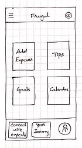
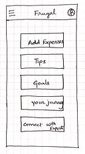
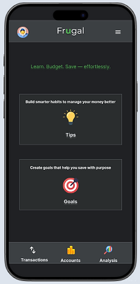

Role
UX Designer · Solo project
Case Study
A personal exploration into how design can turn budgeting from a numbers-only task into a guided, confidence-building experience. Frugal helps everyday users record spending, set purpose-driven goals, and learn better habits without feeling overwhelmed.
UX Designer · Solo project
4 weeks · Guided by the design thinking framework
Figma · FigJam · Maze (unmoderated tests)
During a family conversation about household expenses, I noticed the same pattern: everyone wanted to save more but was unsure how to begin. People were not asking for another spreadsheet; they wanted reassurance they were structuring their money correctly. The opportunity was to build a budgeting experience that teaches as it tracks.
1:1 interviews, diary notes, comparative analysis, and personas rooted in behavioral insights.
Paper wireframes → mid-fidelity flows → high-fidelity UI system in Figma.
Unmoderated usability study with five participants who actively manage their finances.
Research showed that the real barrier was not logging transactions—it was confidence. Participants could record purchases but struggled to apply budgeting principles consistently. They needed a structure that reminded them why they were budgeting and what to do next.
The initial hypothesis was “make expense tracking clearer.” After synthesis it evolved to “help people feel confident about their money decisions.” That reframing pushed the design toward a guided experience that connects actions (logging, saving, reviewing) to meaningful outcomes.
Early sketches helped test navigation patterns and the overall information hierarchy before moving to polished screens.





Tips and goals sit at the top of the dashboard, nudging users to take contextual actions.
Goal categories connect financial tasks with relatable life outcomes, making progress tangible.
A dark theme with structured cards and crisp type keeps attention on the next best action.



I ran an unmoderated study with five participants. Tasks included recording a transaction, applying a tip, creating a goal, and reviewing spending stats. Key findings:
Frugal proved that budgeting tools do not need more graphs—they need better guidance. By reframing the problem and validating each step, the experience now helps people feel capable instead of overwhelmed. Future opportunities include motion prototypes, real financial data, and exploring voice guidance.